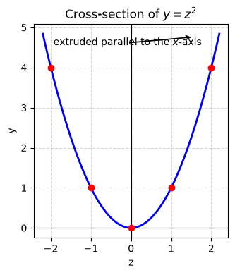
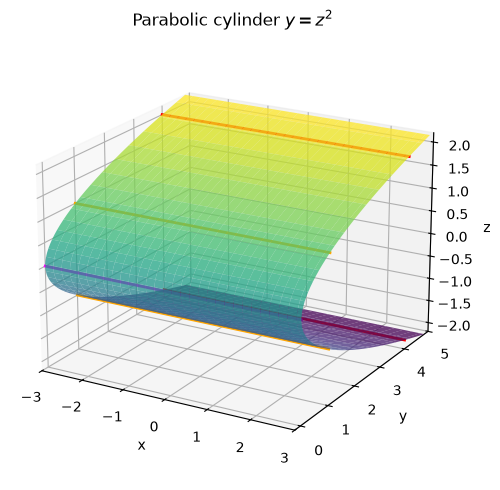
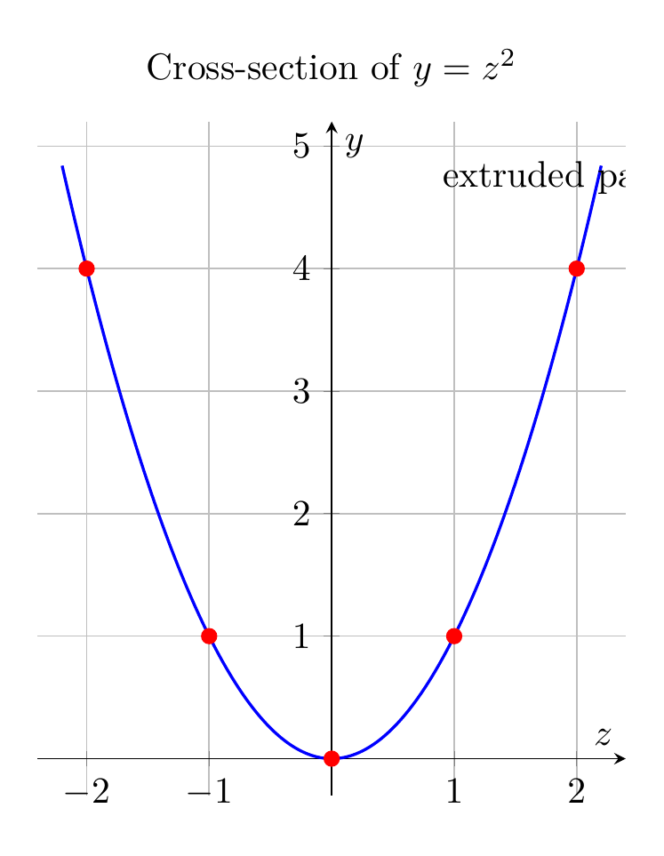
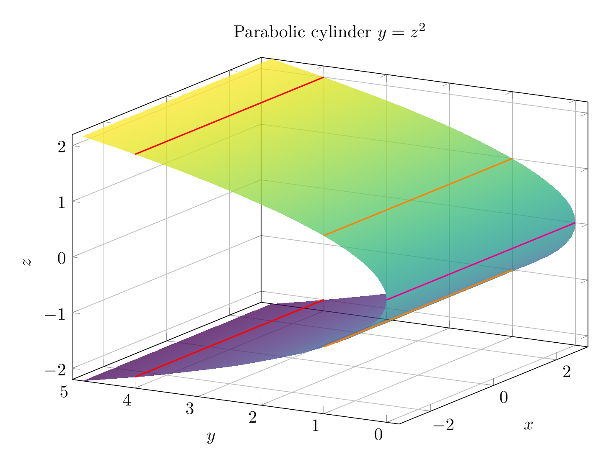

Path: mcma-Nex-N2-Pro/calculus-12.6.6/chat_20260824_172349_566212_utc_0800
Problem
Please solve the math problem in the image.

End of problem
Answer
The equation is
$$
y=z^2.
$$
Because the equation does **not** involve $x$, the same curve in the $yz$-plane is repeated for every value of $x$. In the plane $x=0$, the trace is the parabola
$$
y=z^2
$$
opening in the positive $y$-direction with vertex at $(0,0,0)$. Extruding this parabola parallel to the $x$-axis gives the surface.
A useful parametrization is
$$
\mathbf r(x,z)=(x,z^2,z), \qquad x,z\in\mathbb R.
$$
So the surface is a **parabolic cylinder** whose axis is parallel to the $x$-axis. Its cross-sections perpendicular to the $x$-axis are identical parabolas, and its rulings are the lines obtained by fixing $z=c$, giving
$$
(x,c^2,c), \qquad x\in\mathbb R.
$$
$\boxed{\text{The surface } y=z^2 \text{ is a parabolic cylinder extending parallel to the } x\text{-axis.}}$
---


\documentclass[border=10pt]{standalone}
\usepackage{pgfplots}
\pgfplotsset{compat=1.18}
\begin{document}
\begin{tikzpicture}
\begin{axis}[
axis lines=middle,
xlabel={$z$}, ylabel={$y$},
title={Cross-section of $y=z^2$},
domain=-2.2:2.2,
samples=200,
grid=major,
width=10cm,
height=8cm,
xmin=-2.4, xmax=2.4,
ymin=-0.3, ymax=5.2,
axis equal image,
]
\addplot[blue, thick] {x^2};
\addplot[only marks, red, mark=*] coordinates {(0,0) (1,1) (-1,1) (2,4) (-2,4)};
\node[anchor=south west] at (axis cs:0.8,4.5) {extruded parallel to the $x$-axis};
\end{axis}
\end{tikzpicture}
\end{document}

\documentclass[border=10pt]{standalone}
\usepackage{pgfplots}
\pgfplotsset{compat=1.18}
\begin{document}
\begin{tikzpicture}
\begin{axis}[
view={-60}{20},
xlabel={$x$}, ylabel={$y$}, zlabel={$z$},
title={Parabolic cylinder $y=z^2$},
domain=-3:3,
y domain=-2.2:2.2,
samples=35,
samples y=35,
colormap/viridis,
width=12cm,
height=9cm,
xmin=-3, xmax=3,
ymin=-0.2, ymax=5,
zmin=-2.2, zmax=2.2,
grid=major,
]
\addplot3[surf, opacity=0.75, shader=interp] ({x}, {y^2}, {y});
\addplot3[red, thick, domain=-3:3, samples=100] ({x}, {4}, {-2});
\addplot3[orange, thick, domain=-3:3, samples=100] ({x}, {1}, {-1});
\addplot3[magenta, thick, domain=-3:3, samples=100] ({x}, {0}, {0});
\addplot3[orange, thick, domain=-3:3, samples=100] ({x}, {1}, {1});
\addplot3[red, thick, domain=-3:3, samples=100] ({x}, {4}, {2});
\end{axis}
\end{tikzpicture}
\end{document}

End of answer